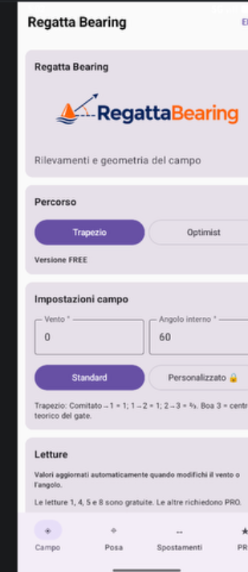

◉
Rilevamenti immediati
Instant bearings
Direzioni tra barca comitato e boe, calcolate a partire dal vento e dalla geometria del percorso.
Directions between the committee boat and marks, derived from wind and course geometry.
Dal calcolo del campo alla posa guidata via GPS: rilevamenti, distanze, boe memorizzate e condivisione del percorso su iPhone.
From course calculations to GPS-assisted mark laying: bearings, distances, saved marks and course sharing on iPhone.

Calcola il campo e raggiungi i punti di posa con GPS Navigator. Salva le coordinate reali delle boe e condividi la configurazione quando serve.
Calculate your course and navigate toward planned positions with GPS Navigator. Save real mark coordinates and share course settings when needed.
Direzioni tra barca comitato e boe, calcolate a partire dal vento e dalla geometria del percorso.
Directions between the committee boat and marks, derived from wind and course geometry.
Rilevamenti e distanze per progettare e verificare la disposizione del campo.
Bearings and distances to plan and check your race-course layout.
Supporto per gli spostamenti delle boe e i cambi di orientamento del campo.
Support for mark offsets and race-course orientation changes.
Configurazioni pensate per due percorsi diffusi nel mondo delle regate.
Configurations designed for two established sailing race courses.
Conversioni immediate con risultati chiari e arrotondamenti leggibili.
Quick conversions with clear, easy-to-read results.
Imposta le lunghezze del campo con le funzioni avanzate PRO.
Configure course lengths with advanced PRO features.
La versione gratuita include i rilevamenti essenziali. PRO sblocca gli strumenti avanzati di posa, navigazione GPS, spostamenti e campo personalizzato.
FREE includes essential bearings. PRO unlocks advanced mark placement, GPS navigation, adjustments and custom course configuration.
Uno strumento operativo per chi deve prendere decisioni chiare, rapidamente, anche durante la preparazione di una prova.
An operational tool for people who need clear, quick decisions while preparing a race.
Per calcolare e controllare la geometria dei percorsi.
To calculate and verify course geometry.
Per coordinare direzioni, distanze e posizioni teoriche.
To coordinate bearings, distances and theoretical positions.
Per comprendere le geometrie del campo con uno strumento semplice.
To understand race-course geometry with a straightforward tool.
Scopri le funzionalità, chiedi informazioni o contattaci per il supporto tecnico.
Explore the features, ask questions or get technical support.